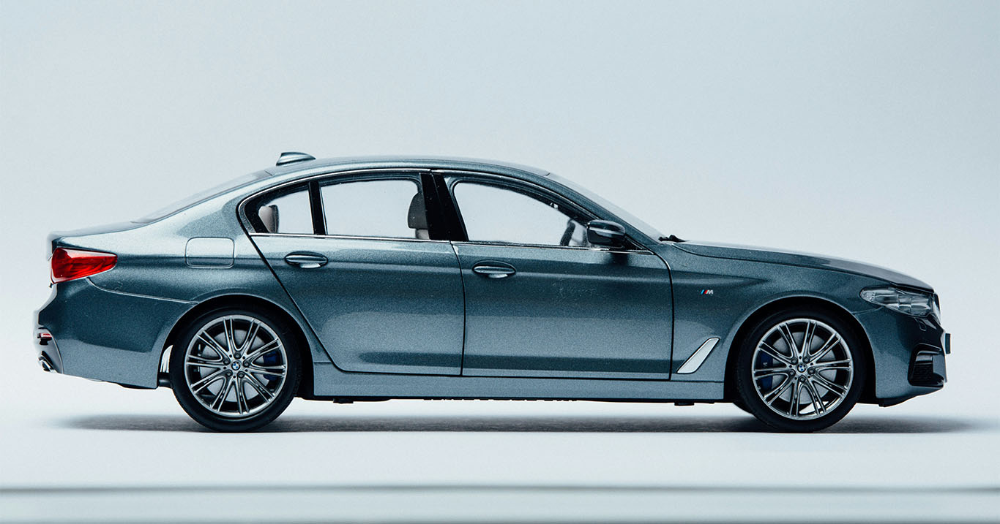

制作会社に派遣スタッフとして在籍し、 某自動車メーカーの企業サイトおよび製品サイトのトップページ更新業務を担当しました。 主に既存サイトの運用フェーズにおける更新作業を中心に携わっています。
担当業務
・企業サイト／製品サイト トップページの更新作業
・更新コンテンツへの導線リンク設置
・社内コンテンツ更新に伴うXMLファイルの編集
・簡単なHTML / CSSの修正対応
・CMS（AEM）を使用したページ更新（後半約3か月）
業務で意識していたこと
大規模サイトのため、既存ルールや影響範囲を常に意識しながら作業を行いました。
自身の実装経験が浅い分、
「後続の運用担当者が困らない更新方法になっているか」を重視し、
変更箇所が分かりやすい構成や記述を心がけています。
使用ツール・技術
Photoshop（画像サイズ調整・サムネイル編集）
HTML / CSS（軽微な修正）
Adobe Experience Manager（AEM）
※ 実案件のため、企業名・画面内容は伏せています。